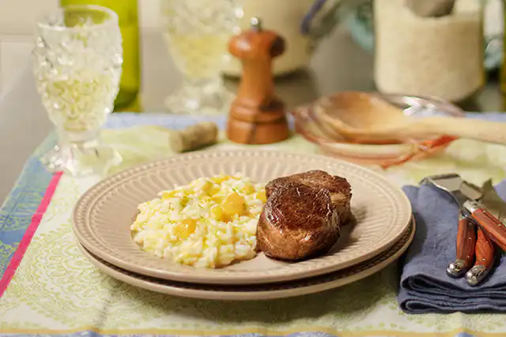

Risoto de queijo na pressão com medalhão
ingredientes:
- 1 xícaras(chá) de arroz para risoto
- 1 cebola
- 1 cenoura pequena
- 1 talo de salsão
- 1 dente de alho
- 1/4 de xícara (chá) de vinho branco
- 500ml de água
- 2 cravos-da-índia
- 2 colheres (sopa) de azeite
- 1/2 xícara (chá) de queijo meia-cura ralado fino
- 1 colher (sopa) de manteiga
- 1/3 colher (chá) de damasco seco fatiado
- raspas de 1 limão
- caldo de 1/2 limão
- sal e pimenta-do-reino moído na hora a gosto
- 1 filé de peito de frango (opcional)
Modo De Preparo:
- Descasque e corte a cebola ao meio. Numa das metades, prenda a folha de louro, espetando com os cravos, e pique fino a outra metade. Lave, descasque e passe a cenoura na parte fina do ralador. Lave o salsão, reserve uma folha e pique o talo em cubinhos. Descasque e pique fino o alho.
- Leve a panela de pressão ao fogo médio. Quando aquecer, regue com 1 colher (sopa) de azeite, adicione a cebola, tempere com uma pitada de sal e refogue até murchar, sem parar de mexer. Junte a cenoura, o salsão, o alho e refogue por mais 2 minutos.
- Acrescente o restante do azeite, junte o arroz e misture bem. Regue com o vinho e mexa até secar. Junte a água, a folha de salsão, a cebola cravejada e o filé de frango (opcional). Tempere com ½ colher (chá) de sal e pimenta a gosto, misture, tampe a panela e aumente o fogo para alto.
- Assim que começar a sair vapor pela válvula, diminua o fogo para médio e conte 3 minutos — esse é o tempo exato para o risoto não passar do ponto. Desligue o fogo e, com cuidado, leve a panela para esfriar sob água corrente até parar de sair vapor pela válvula. Atenção: a água não deve entrar em contato com nenhuma das válvulas, apenas com a superfície lisa da tampa.
- Depois que todo o vapor sair, abra a tampa da panela. Com uma pinça, pesque o filé de frango, a folha de salsão e a cebola cravejada — reserve o filé de frango para outra receita. Volte a panela ao fogo médio e mexa por cerca de 5 minutos, até o risoto ficar cremoso e al dente.
- Desligue o fogo, acrescente a manteiga, o queijo meia-cura ralado e mexa bem. Por último, misture o damasco picado, as raspas e o caldo de limão. Sirva a seguir acompanhado do medalhão.